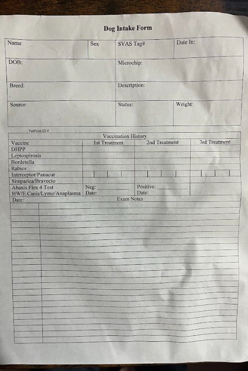
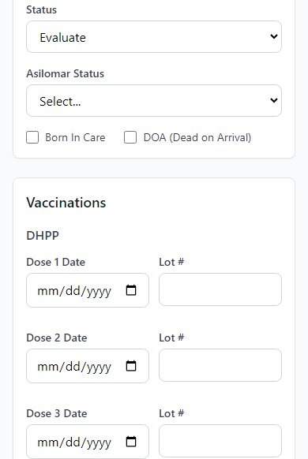
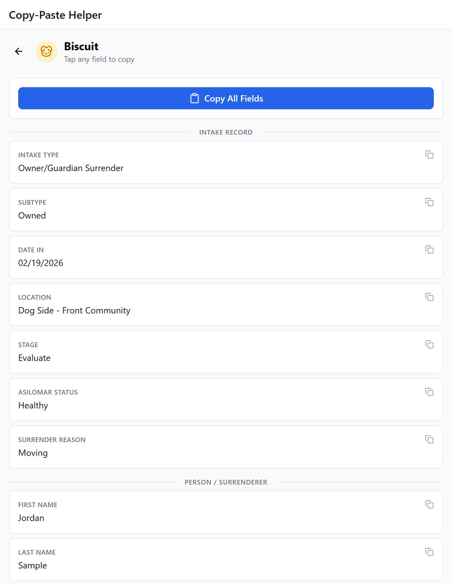

A paper form

Version one

Version two
The problem
Sun Valley had been taking in dogs and cats for more than 30 years and ran on donations. When an animal arrived, staff filled out a paper form by hand. Later the same details were typed into PetPoint.
PetPoint has no API for adding records. I asked its support team to be sure. Scripting its web pages was possible but fragile, so staff would still copy the answers in, and the job became making that copy as quick as possible.
The first version was wrong
I built the first version from their paper forms, including the sections for vaccinations, treatments and tests.
At a demo, the operations manager mentioned that not everything gets entered at the same time. So I asked to watch. She shared her screen and walked me through the three kinds of intake she handles (strays, owner surrenders and returns) in 22 minutes. I had read the whole paper form as intake. It wasn't:
- About 60% of my form was medical sections. Another staff member enters those later, on a different screen.
- Surrenders and returns start with a person, the one bringing the animal in. That lived on separate surrender forms I hadn't seen, so my form had no place for them.
- Six details she entered every time were missing: size, bite status, declawed, condition, medical status and temperament.
I rebuilt it that week: medical out, the person in, and at least 15 fields added. Seven days after that call, it was running at the shelter.
What went in at the shelter
The form ran on the shelter's own PC, and tablets reached it over the building's WiFi. No subscription, no monthly bill. Staff could start it by double-clicking a paw-print icon on the desktop.
A finished intake opens in a copy helper that groups the fields in the order of PetPoint's screens, so entering it is a short run of copy and paste.

It went in on February 15, 2026.
The website
The old site's adoption pages showed no animals. I rebuilt it and kept it on WordPress so the staff could keep editing it themselves. The new homepage showed the shelter's real adoptable dogs and cats, live. The donate button had been locked at $25, so I fixed it to let donors choose an amount.
How it ended
About six weeks after the form went in, Sun Valley closed for lack of funding. The director asked for a closing notice on March 28. I posted it the next day. Another rescue was stepping in to continue the work.
I'd do it again.
What I took from it
- Watch the work before building. I read the paper form as the whole process. It wasn't.
- Fit what they already use. PetPoint and WordPress were staying, so what I built had to work with both.
Built as a volunteer, on nights and weekends, with AI coding tools.